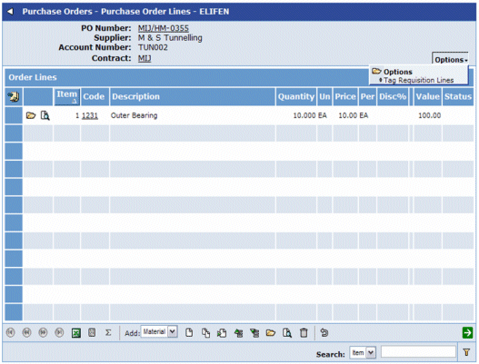
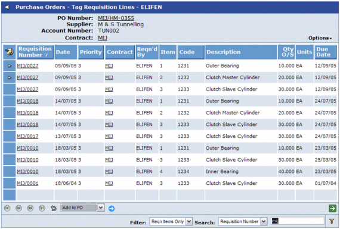

To Select Additional Requisition Lines onto a PO:
- From the Order Entry screen, select Tag Requisition Lines from the Options menu.
This will take you to a list of all outstanding requisition items for the specified contract.

-
- From the Choose Action list, select Add to PO and click
 .
.
This will create new PO lines from the selected requisition lines, and will take you back to the Order Line Entry screen.